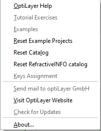

OptiLayer On-Line Help
OptiLayer On-Line Help
Navigation: OptiLayer Menu Commands >
Help Menu
` <idh_window_menu.html>`__ ` <idh_optilayer.html>`__ ` <foreword.html>`__
The OptiLayer Help menu contains functions that allow you to open the help file, access training exercises, view information about the program User, etc.

OptiLayer has a comprehensive online Help system. To search for specific information on Help topics, click the OptiLayer Help command in the Help menu. You can also access a specific help topic for any dialog window by pressing the Help button or the F1 key.
Tutorial Exercises - opens the section of the Help file that contains training exercises.
Examples - opens the section of the Help file that contains additional examples, demonstrating the capabilities of the program in detail.
Reset Example Project - resets the Project to its original state.
Reset Catalog
Reset RefractiveINFO catalog
The Key Assignment command will display the list of keyboard shortcuts.
Send mail to OptiLayer GmbH
Visit OptiLayer Website - opens the official OptiLayer website at www.optilayer.com.
Check for Updates
About… - provides information about the User and the software version.